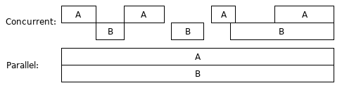

Channel is an important built-in feature in Go. It is one of the features that make Go unique. Along with another unique feature, goroutine, the two unique features make concurrent programming in Go become very convenient and fun. And the two features lower the difficulties of concurrent programming much.
This article will list all the channel related concepts, syntaxes and rules. To understand channels better, the internal structure of channels and some implementation details by the standard Go compiler/runtime are also simply described.
The information in this article may be some intensive for new gophers. Some parts of this article may be needed to read for several times to digest.
Modern CPUs often have multiple cores, and some CPU cores support hyper-threading. In other words, modern CPUs can process multiple instruction pipelines simultaneously. To fully use the power of modern CPUs, we need to do concurrent programming in coding our programs.
Concurrent computing is a form of computing in which
several computations are executed during overlapping time periods.
The following picture depicts two concurrent computing cases.
In the picture, A and B represent two separate computations.
The second case is also called parallel computing,
which is special concurrent computing.
In the first case, A and B are only in parallel during a small piece of time.

Concurrent computing may happen in a program, a computer, or a network. In Go 101, we only talk about program-scope concurrent computing. Goroutine, which has been introduced before, is the Go way to create concurrent computations.
Concurrent computations may share resources, generally memory resource. There are some circumstances may happen in a concurrent computing.These circumstances are called data races. One of the duties in concurrent programming is to control resource sharing among concurrent computations, so that data races will not happen. The ways to achieve this duty are called concurrency synchronization, or data synchronization. Go supports several data synchronization techniques. Below will introduce one of them, channel.
Other duties in concurrent programming includeMost operations in Go are not synchronized, in other words, they are not thread-safe. These operations include value assignments, argument passing and container element manipulations, etc. There are only a few operations which are synchronized, including the several to be introduced channel operations below.
In Go, generally, each computation is a goroutine. So later we use goroutines to represent computations.
One suggestion (made by Rob Pike) for concurrent programming is don't (let goroutines) communicate by sharing memory, (let them) share memory by communicating (through channels). The channel mechanism is a result of this philosophy.
Communicating by sharing memory and sharing memory by communicating are two patterns in concurrent programming. When goroutines communicate by sharing memory, we need use some tranditional concurrency synchronization techniques, such as mutex locks, to protect the shared memory to prevent data races.
Go provides a unique concurrency synchronization technique, channel. Channels make goroutines share memory by communicating. We can view a channel as an internal FIFO (first in, first out) data queue within a program. Some goroutines send values to the queue (the channel) and some other goroutines receive values from the queue.
Along with transferring values (through channels), the ownerships of some values may be also transferred between goroutines. When a goroutine sends a value to a channel, we can view the goroutine releases the ownerships of some values. When a goroutine receives a value from a channel, we can view the goroutine acquires the owerships of some values. The values (whose owerships are transferred) are often referenced (but are not required to be referenced) by the transferred value.
Surely, there may be also not any ownerships transferred along with channel communications.
Please note, here, when we talk about ownerships, we mean the ownerships from the logic view. Not like Rust language, Go doesn't assure value ownerships from the syntax level. Go channels can help programmers write data races free code easily, but Go channels don't prevent programmers from writing bad concurrent code.
Although Go also supports tranditional concurrency synchronization techniques.
only channel is first-level citizen in Go. Channel is one kind of types in Go,
so we can use channels without importing any packages.
On the other hand,
those
tranditional concurrency synchronization techniques are provided
in the sync and sync/atomic standard packages.
Honestly, each concurrency synchronization technique has its own best use scenarios. But channel has a wider application range and has more variety in using. One problem of channels is, the experience of programming with channels is so enjoyable and fun that programmers often even prefer to use channels for the scenarios which channels are not best for.
Channel types are composite types. Like array, slice and map, each channel type has an element type. All data to be sent to the channel must be values of the element type.
Channel types can be bi-directional or single-directional. AssumeT is an arbitrary type,
chan T denotes a bidirectional channel type.
Compilers allow both receiving values from and sending values to
bidirectional channels.
chan<- T denotes a send-only channel type.
Compilers don't allow receiving values from send-only channels.
<-chan T denotes a receive-only channel type.
Compilers dsn't allow sending values to receive-only channels.
T is called element types of these channel types.
Values of bidirectional channel type chan T can be converted to
both send-only type chan<- T and
receive-only type <-chan T, but not vice versa.
Values of send-only type chan<- T can't be converted to
receive-only type <-chan T, and vice versa.
Note that the <- signs in channel type literals are modifiers.
Each channel has a capacity, which will be explained in the section after next. A channel with a zero capacity is called unbuffered channel and a channel with a non-zero capacity is called buffered channel.
The zero values of channel types are represented with
the predeclared identifier nil.
A non-nil channel value must be created by using the built-in make
function. For example, make(chan int, 10) will create a channel
whose element type is int.
The second argument of the make function call specifies
the capacity of the new created channel.
The second parameter is optional and its default value is zero.
All channel types are comparable types.
From the article value parts,
we know that non-nil channel values are multi-part values.
After one channel value is assigned to another,
the two channels share the same undrelying part(s).
In other words, the two channels represent the same internal channel object.
The result of comparing them is true.
There are five operations we can perform on a channel.
Assume the channel is ch,
their syntaxes and function calls of these operations are listed here.
close(ch)
where close is a built-in function.
The argument of a close function call must be a channel value,
and the channel value must not be a receive-only channel.
v, to the channel
by using the following syntax
ch <- v
where v must be a value which is assignable to
the element type of channel ch.
Note that here <- is a channel-send operator.
<-ch
<- is a channel-receive operator.
(Its representation is the same as a channel-send operator.)
For most scenarios, a channel receive operation is viewed as a single-valued expression. However, when a channel operation is used as the only source value expression in an assignment, it can be viewed as a multi-valued expression and result a second optional untyped boolean value, which indicates whether or not the first result is sent before the channel is closed. (Below we will learn that we can receive unlimited number of values from a closed channel.) For example,
v = <-ch
v, sentBeforeClosed = <-ch
cap(ch)
where cap is a built-in function which has ever been
introduced in containers in Go.
The return result of a cap function call
is an int value.
len(ch)
where len is a built-in function
which also has ever been introduced before.
The return value of a len function call
is an int value.
The result length is number of elements which have already
been sent successfully to the queried channel
but haven't been received (taken out) yet.
All these operations are already synchronized, so no further synchronizations are needed to perform these operations. However, like most other operations in Go, channel value assignments are not synchronized. Similarly, assigning the received value to another value is also not synchronized, though any channel receive operation is synchronized.
If the queried channel is a nil channel, both of the
built-in cap and len functions return zero.
The two query operations are so simple that
they will not get further explanations later.
In fact, the two operations are seldom used in practice.
The rules for channel send, receive and close operations will be introduced and explained in the following sections.
The following a table simply describes the rules for all kinds of operations applying on nil, closed and not-closed non-nil channels. More detailed explanations will made in a later section.
| Operation | A Nil Channel | A Closed Channel | A Not-Closed Non-Nil Channel |
|---|---|---|---|
| Close | panic | panic | succeed to close (C) |
| Send Value To | block for ever | panic | block or succeed to send (B) |
| Receive Value From | block for ever | never block (D) | block or succeed to receive (A) |
The following will make more explanations for the four labelled cases.
To better understand channel types and values and to make the some explanations easier, knowing the rough internal structures of internal channel objects is very helpful. We can think each channel maintains three queues internally:Once a non-nil channel is closed, sending a value to the channel will produce a runtime panic in the current goroutine, and the send operation is viewed as a non-blocking operation.
[Channel rule case C]: when a goroutine tries to close a not-closed non-nil channel, both of the following two steps will be performed by the following order.[Channel rule case D]: after a channel is closed, channel receive operations on the channel will never block. The values in the value buffer of the channel can still be received. Once all the values in the value buffer are taken out and received, infinite zero values of the element type of the channel will received by any of following receive operations on the channel. As above has mentioned, the second return result of a channel receive operation is an untype boolean value which indicates whether or not the first result (the received value) is sent before the channel is closed.
Knowing what are blocking and non-blocking channel send or receive operations
is important to understand the mechanism of select control flow
blocks which will be introduced in a later section.
In the above explanations, if a goroutine is unshifted out of a queue
(either the sending goroutine queue or the receiving goroutine queue) of a channel,
and the goroutine was blocked for being pushed into the queue at a
select control flow code block,
then the goroutine will be resumed to running state at the step 9 of the
select control flow code block execution.
It may be dequeued from the corresponding goroutine queues of
several goroutines involved in the select control flow code block.
select control flow code block.
Let's view some channel use examples to consume the above introduced rules.
A simple request/response example. The two goroutines in this exampe talk with each other through an unbuffered channel.package main
import "fmt"
func main() {
c := make(chan int) // an unbuffered channel
go func() {
x := <- c // blocking here until a value is received.
c <- x*x // blocking here until the result is received.
}()
c <- 3 // blocking here until the value is received.
y := <-c // blocking here until the result is received.
fmt.Println(y) // 9
}
A demo of using a buffered channel. This program is not a concurrent one. Once the channel is closed, infinite values can be received from it.
package main
import "fmt"
func main() {
c := make(chan int, 2) // a buffered channel
c <- 3
c <- 5
close(c)
fmt.Println(len(c), cap(c)) // 2 2
x, ok := <-c
fmt.Println(x, ok) // 3 true
fmt.Println(len(c), cap(c)) // 1 2
x, ok = <-c
fmt.Println(x, ok) // 5 true
fmt.Println(len(c), cap(c)) // 0 2
x, ok = <-c
fmt.Println(x, ok) // 0 false
x, ok = <-c
fmt.Println(x, ok) // 0 false
fmt.Println(len(c), cap(c)) // 0 2
close(c) // panic!
c <- 7 // also panic if the above close call is removed.
}
A never-ending football game.
package main
import (
"fmt"
"time"
)
func main() {
var ball = make(chan string)
kickBall := func(playerName string) {
for {
fmt.Println(<-ball, "kicked the ball.")
time.Sleep(time.Second)
ball <- playerName
}
}
go kickBall("John")
go kickBall("Alice")
go kickBall("Bob")
go kickBall("Emily")
ball <- "referee" // kick off
var c chan bool // nil
<-c // blocking here for ever
}
Please read channel use cases for more channel use examples.
When a value is sent to or receive from a channel, a value copy occurs. Like value assignments and function argument passing, when a value is copied, only its direct part is copied.
For the standard Go compiler,
the size of channel element types must be smaller than 65536.
However, generally, we shouldn't create channels with large-size element types,
for all channel send and receive operations will copy the transferred values.
When an element value is passed from one goroutine to another,
two value copies will be made.
So if the passed value size is too large,
it is best to use a pointer element type instead,
to avoid a large value copy cost.
Note, a channel is referenced by all the goroutines in either the sending or the receiving goroutine queue of the channel, so if neither of the two queues of the channel is empty, the channel will not be garbage collected for sure. On the other hand, if a goroutine is blocked and stays in either the sending or the receiving goroutine queue of a channel, then the goroutine will also not be garbage collected for sure, even if the channel is referenced only by this goroutine. In fact, a goroutine can be only garbage collected when it has already exited.
Note, channel send operations and receive operations are simple statements. A channel receive operation can also be used as a single-valued expression. Simple statements and expressions can be used at certain portions of basic control flow blocks.
An example in which channel send and receive operations appear as simple statements in twofor control flow blocks.
package main
import (
"fmt"
"time"
)
func main() {
fibonacci := func() chan uint64 {
c := make(chan uint64)
go func() {
var x, y uint64 = 0, 1
for ; y < (1 << 63); c <- y { // here
x, y = y, x+y
}
close(c)
}()
return c
}
c := fibonacci()
for x, ok := <-c; ok; x, ok = <-c { // here
time.Sleep(time.Second)
fmt.Println(x)
}
}
for-range control flow code block applies to channels.
The loop will try to iteratively receive the values sent to a channel,
until the channel is closed and no more values are still in its value buffer queue.
Unlike the for range syntax on arrays, slices and maps,
most one iteration variable is allowed to be present
in the for range syntax on channels.
for v = range aChannel {
// use v
}
for {
v, ok = <-aChannel
if !ok {
break
}
// use v
}
Surely, here the aChannel value must not be a send-only channel.
If it is a nil channel, the loop will block there for ever.
for loop block in the example
shown in the last section can be simplified to
for x := range c {
time.Sleep(time.Second)
fmt.Println(x)
}
select-case Control Flow Code Blocksselect-case code block syntax which is specially designed for channels in Go.
The syntax is much like the switch block syntax, for example,
there can be multiple case branches and at most one
default branch in the select-case code block.
But there are also some obvious differences between them.
select keyword
(before {).
fallthrough statements are allowed to be used in case branches.
case keyword in a select-case code block
must be either a channel receive operation or a channel send operation statement.
case keywords in a select-case code block,
Go runtime will randomly select one of non-blocking channel operations to execute,
then continue to execute the corresponding case branch.
case keywords
in a select-case code block are blocking operations,
the default branch will be selected to execute
if the default branch is present.
If the default branch is absent,
the current goroutine will be pushed into the corresponding
sending goroutine queue and receiving goroutine queue of
every channels involved in the channel operations
followed case keywords,
then enter blocking state.
By the rules, a select-case code block without any branches,
select{}, will make the current goroutine stay in blocking state forever.
default branch for sure.
package main
import "fmt"
func main() {
var c chan struct{} // nil
select {
case <-c: // blocking operation
case c <- struct{}{}: // blocking operation
default:
fmt.Println("Go here.")
}
}
An example showing how to use try-send and try-receive:
package main
import "fmt"
func main() {
c := make(chan string, 2)
trySend := func(v string) {
select {
case c <- v:
default: // go here if c is full.
}
}
tryReceive := func() string {
select {
case v := <-c: return v
default: return "-" // go here if c is empty.
}
}
trySend("Hello!")
trySend("Hi!")
trySend("Bye!") // fail to send, but will not blocked.
fmt.Println(tryReceive()) // Hello!
fmt.Println(tryReceive()) // Hi!
fmt.Println(tryReceive()) // -
}
The following example has 50% possibility to panic. Both of the two
case operations are non-blocking in this example.
package main
func main() {
c := make(chan struct{})
close(c)
select {
case c <- struct{}{}: // panic if this case is selected.
case <-c:
}
}
The select mechanism in Go is an important and unique feature. Here the steps of the select mechanism implementation by the official Go runtime are listed.
N channels of the sorted result,
where N is the number of involved channels in the select block.
Below, the sorted lock order mean for the the first N ones.
case branch body.
The channel operation may wake up another blocked goroutine.
Go to step 12.
select-case code block gets resumed later,
it will be removed from all the sending goroutine queues
and the receiving goroutine queues of every channels
involved in the channel operations followed case keywords
in the select-case code block.
We can find more channel use cases in this article. Although channels can help us write correct concurrent code easily, like other data synchronization techniques, channels will not prevent you from writing improper concurrent code. And channel may be not always the best solution for all use cases for data synchronizations. Please read this article and this article for more synchronization techniques in Go.